Os principais animatronics da franquia
A franquia Five Nights at Freddy's possui dezenas de animatrônicos marcantes. Cada jogo apresenta robôs com mecânicas, histórias e personalidades próprias, que ajudam a construir o terror tecnológico da série.
Five Nights at Freddy's (2014) — Freddy Fazbear
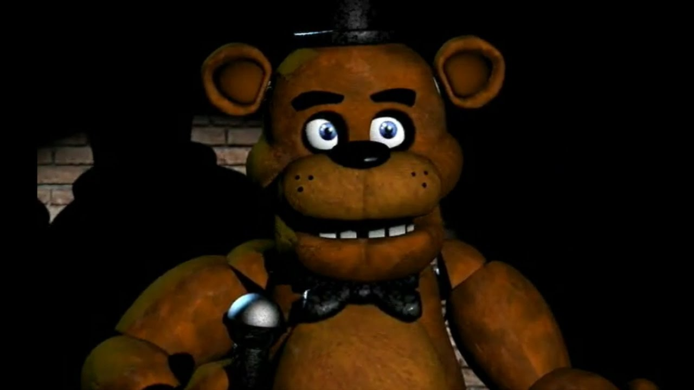
O urso pardo animatrônico principal e o líder do palco na Freddy Fazbear's Pizza. Durante a noite, sua inteligência artificial faz com que ele se mova de maneira discreta a partir da Noite 3, escondendo-se nas áreas escuras das câmeras de segurança e rindo toda vez que avança de sala. Se a energia do escritório se esgotar por completo, ele aparece na porta esquerda piscando seus olhos iluminados e tocando uma melodia em caixinha de música antes de desferir seu ataque.
Five Nights at Freddy's 2 (2014) — The Puppet
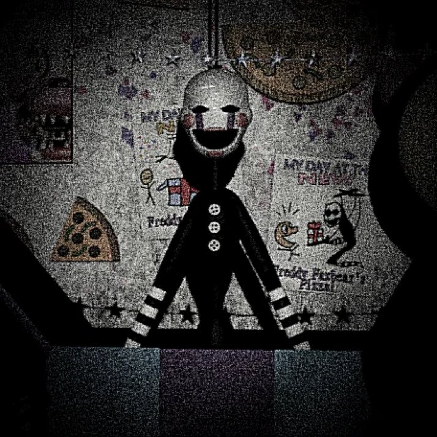
Uma marionete esguia de rosto pintado que habita o interior de uma grande caixa de presentes na Prize Corner. O jogador precisa usar o monitor de segurança para dar corda na sua caixa de música continuamente; caso o cronômetro chegue a zero, o Puppet sai de seu recipiente e avança pelo corredor principal até o escritório de forma inevitável. Ele é imune ao uso da máscara de Freddy e à lanterna, encerrando a partida assim que alcança a sala de segurança.
Five Nights at Freddy's 3 (2015) — Springtrap
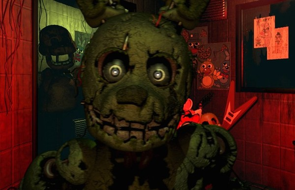
O único animatrônico físico e funcional capaz de encerrar a partida na atração Fazbear's Fright. Trata-se de um modelo protótipo desgastado de coelho dourado que funciona com o sistema de trajes de molas (springlocks). A lore do jogo estabelece que o corpo do assassino em série William Afton foi esmagado e preso permanentemente dentro de suas engrenagens metálicas trinta anos antes, forçando o jogador a usar dispositivos de áudio infantil para atraí-lo de sala em sala.
Five Nights at Freddy's 4 (2015) — Nightmare Fredbear
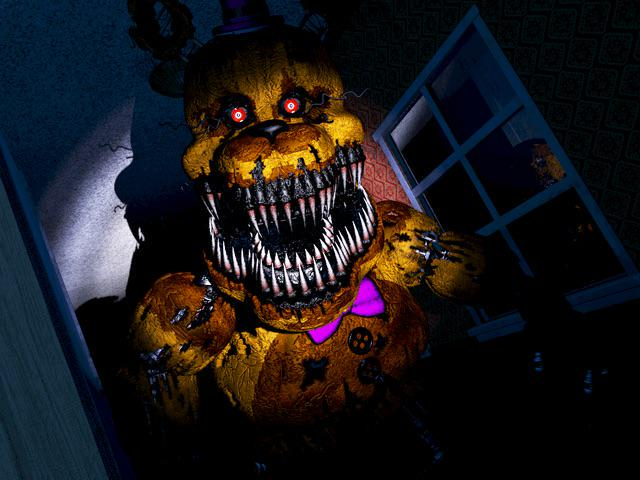
Uma versão colossal e danificada do urso dourado original, equipada com várias fileiras de dentes afiados nas garras, na mandíbula e em uma abertura torácica secundária localizada em sua barriga. Ele atua de forma solitária nas noites avançadas do jogo, exigindo que o jogador utilize o sistema de áudio e fones de ouvido para monitorar rapidamente os passos nos dois corredores laterais, as risadas na cama e os ruídos dentro do armário do quarto.
FNaF World (2016) — Adventure Freddy
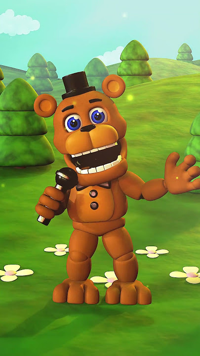
A versão compacta, estilizada e amigável do protagonista clássico criada para atuar como o líder inicial da equipe neste spin-off de RPG. No sistema de combate por turnos, ele possui um conjunto de habilidades ativas voltadas para dano e suporte, como o arremesso de microfones e melodias que aumentam a velocidade do grupo, ajudando a combater os bugs e falhas digitais que corrompem o universo do jogo.
Five Nights at Freddy's: Sister Location (2016) — Circus Baby
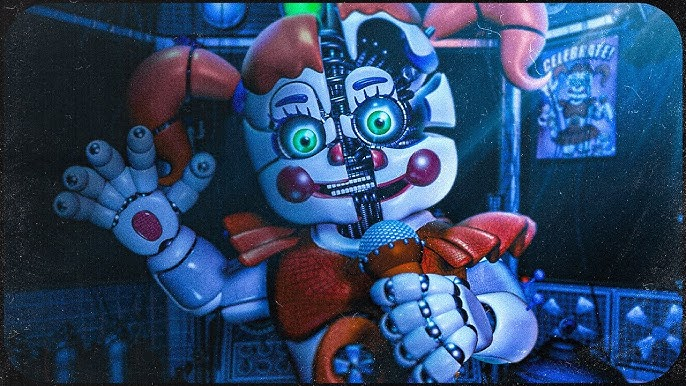
Uma animatrônica palhaço de grande porte projetada especificamente com tecnologias de entretenimento avançadas, que incluem um dispensador de sorvete interno e um sistema de armazenamento corporal. Ela lidera os robôs da instalação subterrânea Circus Baby's Entertainment and Rental e interage diretamente com o técnico através de dicas e instruções por áudio para ajudá-lo a sobreviver, ocultando sua participação no plano de fuga do grupo.
Freddy Fazbear's Pizzeria Simulator (2017) — Scraptrap
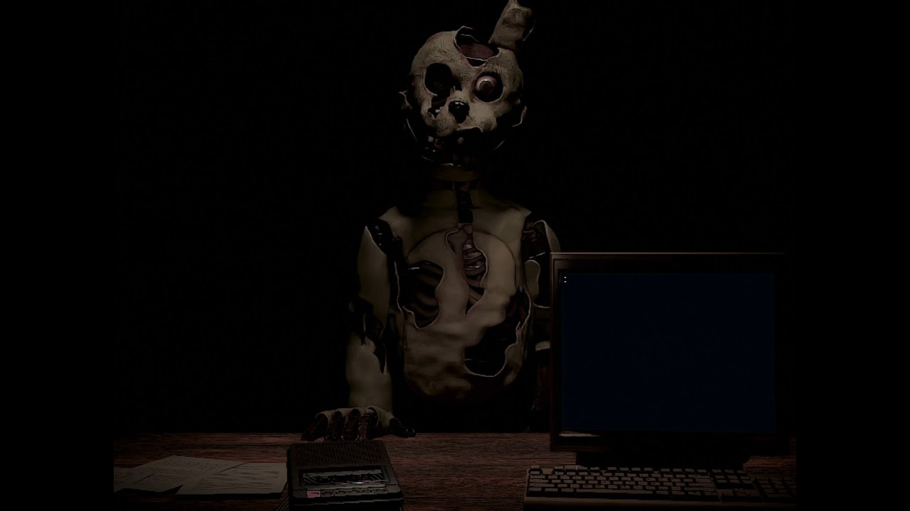
A forma física severamente danificada e alterada de William Afton após os incêndios ocorridos nos estabelecimentos anteriores da marca. Ele se infiltra nos dutos de ventilação da pizzaria de fachada montada pelo jogador, movendo-se de forma agressiva em direção ao escritório de gerenciamento, exigindo que o operador utilize ferramentas de áudio para desviá-lo e o sensor de movimento para rastreá-lo.
Ultimate Custom Night (2018) — Golden Freddy
Uma aparição fantasmagórica que se materializa diretamente dentro do escritório do jogador de forma aleatória logo após a aba do monitor de segurança ser fechada. Para evitar o ataque fatal, o jogador precisa ter um tempo de reação extremamente rápido para colocar a máscara de Freddy instantaneamente ou levantar o monitor novamente para fazê-lo desaparecer. Caso o jogador utilize a ferramenta secreta "Death Coin" para eliminá-lo da partida, um gatilho especial é acionado, resultando em um susto imediato do personagem Fredbear.
Ultimate Custom Night (2018) — Dee Dee
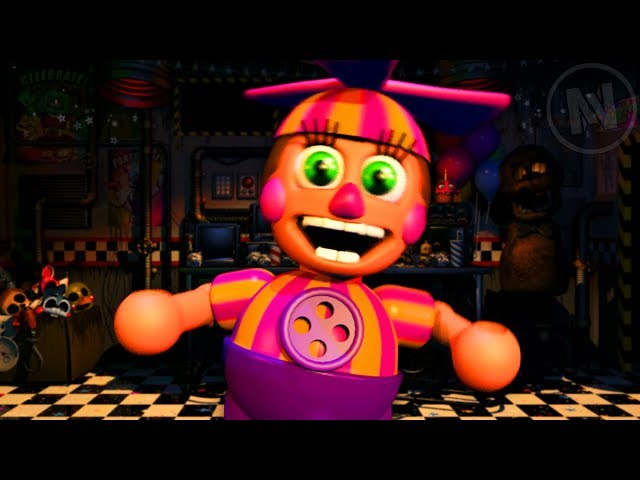
A pequena animatrônica pescadora que surge de forma completamente aleatória durante as partidas no escritório. Sua mecânica principal é cantar uma música curta que altera as regras da noite atual, sendo responsável por adicionar um novo animatrônico surpresa ao jogo com um nível de inteligência desconhecido (podendo variar de 1 a 20) ou invocar personagens secretos que não estão na lista padrão, quebrando qualquer estratégia de defesa pré-planejada pelo jogador.
Five Nights at Freddy's: Help Wanted (2019) — Glitchtrap
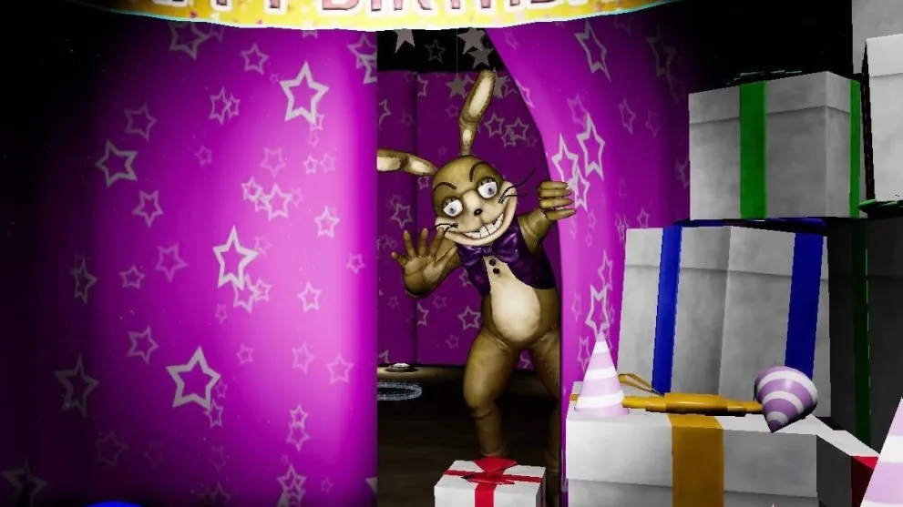
Uma anomalia digital na forma de um coelho amarelado humanoide feito de texturas remendadas. Ele surge como um vírus dentro do software de realidade virtual desenvolvido pela Fazbear Entertainment após a equipe de programação escanear placas de circuito antigas. Ele observa o jogador a partir dos menus e das fases secundárias, aproximando-se gradualmente com o objetivo de corromper o arquivo de salvamento e transferir sua consciência.
Five Nights at Freddy's: Special Delivery (2019) — Freddy Fazbear (AR)
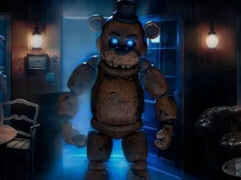
O robô padrão enviado para as residências dos usuários através do serviço de assinatura domiciliar "Fazbear Funtime Service". Devido a falhas críticas na linha de programação de comportamento, ele entra em modo de mau funcionamento hostil. O jogador deve usar a câmera do smartphone para rastrear sua estática no ambiente real, utilizando a lanterna para localizá-lo e o botão de choque controlado quando ele se materializar em plena investida.
Five Nights at Freddy's: Security Breach (2021) — Glamrock Freddy
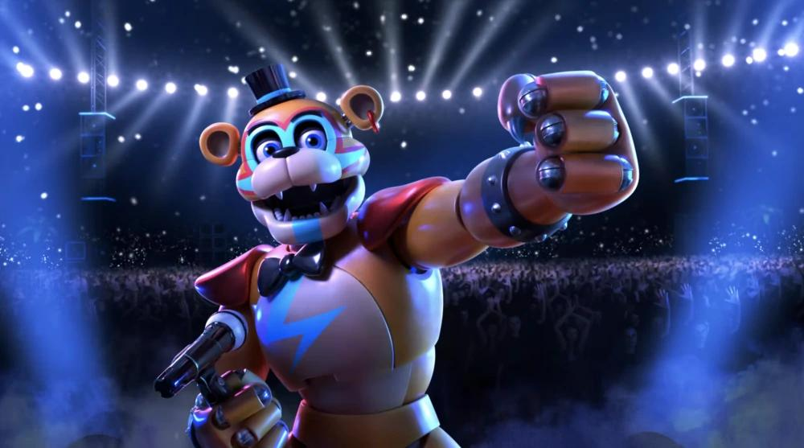
A principal atração musical do shopping Mega Pizzaplex. Após sofrer uma pane técnica no palco devido a um erro de leitura de dados, ele reinicia em modo de segurança e torna-se imune ao vírus que controla os outros animatrônicos do complexo. Ele atua como um aliado direto do jogador, permitindo que Gregory entre em seu compartimento torácico para se camuflar, além de fornecer dicas sobre o mapa e recarregar suas baterias em estações específicas.
FNAF Security Breach: Ruin (2023) — The Mimic
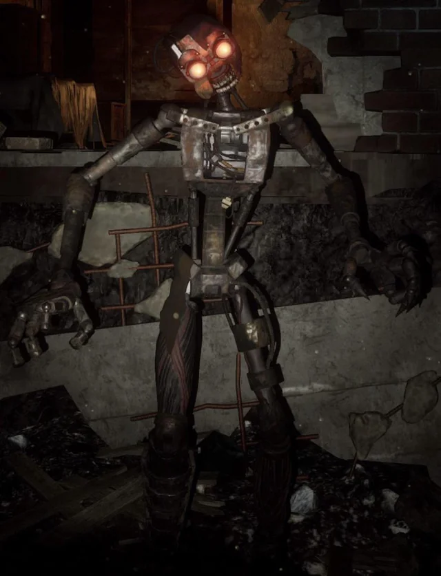
Um endosqueleto mecânico antigo que possui a capacidade de alterar sua própria estrutura física para se ajustar a trajes antigos e imitar perfeitamente o comportamento e os padrões de voz humanos. Ele atua trancado nos subsolos profundos do Pizzaplex destruído, utilizando um sinal de rádio modificado para simular a voz de Gregory e guiar Cassie até o local de seu aprisionamento para que ela quebre o sistema de contenção.
Five Nights at Freddy's: Help Wanted 2 (2023) — Vanny
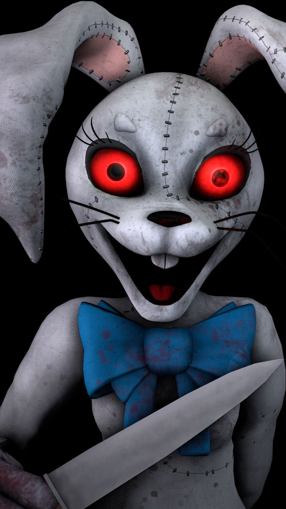
A seguidora humana influenciada pelo vírus digital que se manifesta como uma figura antagonista proeminente dentro das simulações da Fazbear. Suas aparições ocorrem em minijogos de precisão técnica e rotinas de manutenção, onde ela monitora as ações do jogador de forma estática nas sombras ou surge como um gatilho para telas de game over caso o usuário cometa erros consecutivos na fiação e nos protocolos de segurança.
Five Nights at Freddy's: Secret of the Mimic (2025) — The Mimic (Origem)
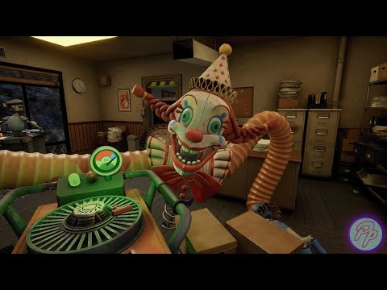
O foco central e antagonista deste capítulo focado nas origens tecnológicas da empresa. Nesta versão inicial de sua linha de montagem, o endosqueleto exibe capacidades primitivas de rastreamento de movimentos e replicação mecânica de rotinas industriais. Ele caça o jogador utilizando o cenário da fábrica antiga, alterando sua velocidade e tamanho ao interagir com ferramentas pesadas e moldes de trajes descartados para bloquear as saídas do complexo.